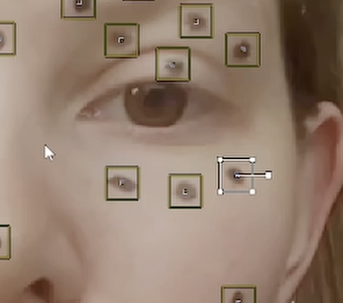
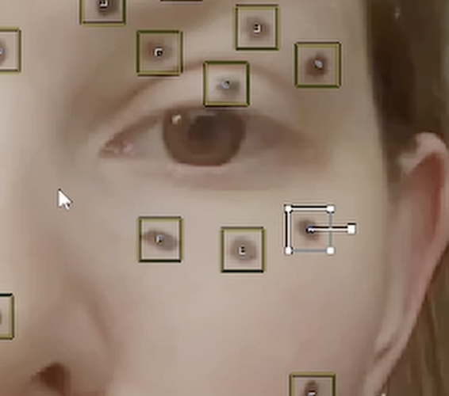
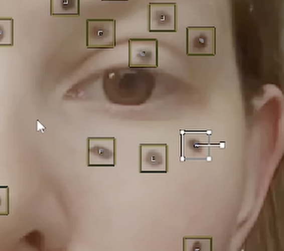
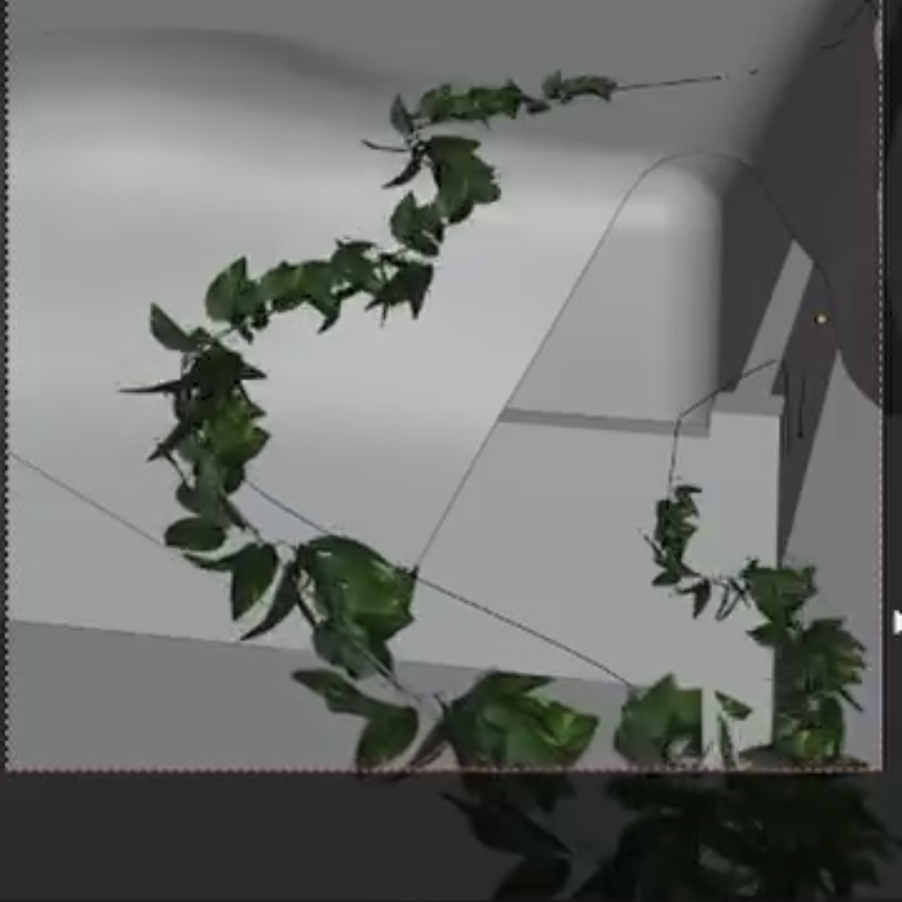
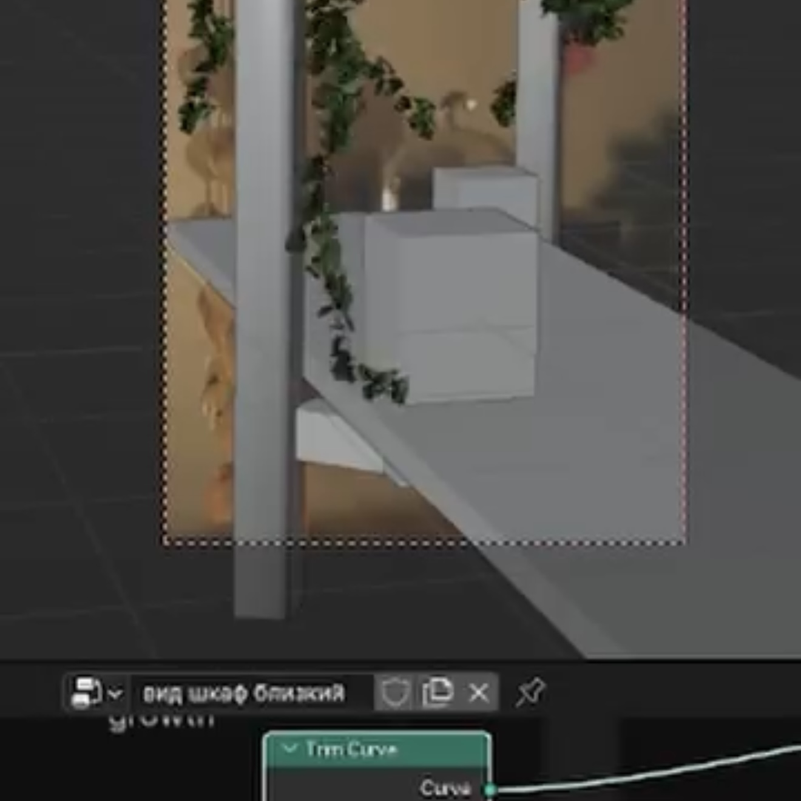
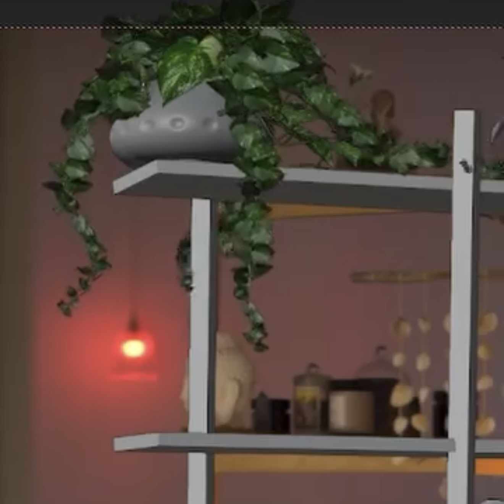

VFX
Facial Tracking in Blender
A personal project created as a tracking exercise. I usually work with SynthEyes, but I wanted to experiment with Blender's tracking tools and see what results I could achieve directly inside the software. This is an older project from 2023, but I decided to keep it in my portfolio as part of my learning process and creative experimentation.



Personal Project
Another personal project. I created the ivy animation in Blender and used fSpy to match the camera perspective, since no full camera tracking was required. The final compositing and editing were completed in DaVinci Resolve.



SuperStep
An animation created for the SuperStep store. The sneakers, animal paw, rigging, and animation were produced in Blender. The final render was composited with the live-action footage in After Effects.
Onestwear
An animation created for the lingerie brand ONESTWEAR. The footage was tracked in SynthEyes, while the garment and cloth simulation were created in CLO3D. The final scene was rendered in Blender and composited in After Effects.